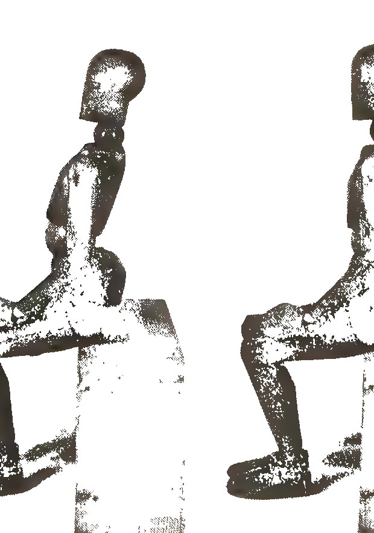
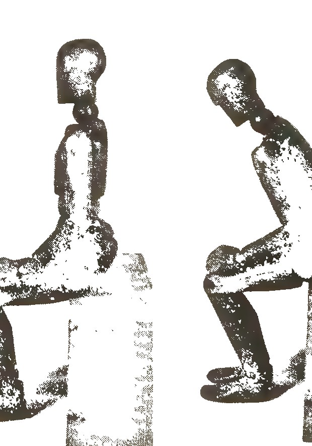

Kiểu vận động đầu tiên liên quan đến các cơ ở lưng, vốn được kích hoạt bởi phản xạ Đèn Xanh. Khi phản xạ này đã thành thói quen, nó gây ra căn bệnh phổ biến nhất trong các xã hội công nghiệp hóa: đau lưng dưới. Vì bạn mới bắt đầu khám phá vùng thường xuyên đau nhức và ê ẩm này, hãy khởi đầu bằng những cử động nhỏ, thận trọng, được thực hiện chậm rãi và chú tâm. Cuối cùng, hãy lặp lại bài học thêm một lần nữa để chắc chắn rằng bạn hiểu các kiểu vận động và có thể thực hiện chúng với nhận biết và thoải mái.
Nằm ngửa, đầu gối cong và bàn chân đặt gần mông.
Ấn xương chậu xuống sàn vài lần, rồi bắt đầu ấn xương cụt xuống mạnh hơn phần còn lại của xương chậu. Điều này sẽ làm lưng dưới cong lên ở đường thắt lưng.
Đưa một bàn tay dưới phần lưng dưới để cảm nhận cách các cơ co lại ở hai bên cột sống khi bạn uốn cong.
Giờ hít vào khi bạn uốn cong lưng dưới và thở ra khi bạn làm phẳng
Hãy nhớ: Luôn di chuyển chậm rãi, nhẹ nhàng và không ép buộc cử động.
lưng dưới xuống sàn. Dần dần tăng phạm vi của cử động này bằng cách ấn xương cụt xuống mạnh hơn để nâng lưng dưới cao hơn, rồi ấn lưng dưới xuống mạnh hơn, làm xương cụt nhấc lên nhẹ. (Thực hiện cử động này chậm rãi và nhẹ nhàng khoảng 20 lần.)
Lật sấp người, đặt má trái lên mu bàn tay phải, với bàn tay trái nằm dọc theo cơ thể.
Nhấc khuỷu tay phải lên chậm 3 lần.
Hãy cố cảm nhận những cơ nào ở vai đang co lại.
Nhấc đầu lên chậm để nhìn qua vai phải 3 lần.
Nhận biết sự co lại của các cơ từ vai dọc theo bên phải cột sống đến xương chậu.
Đồng thời nhấc khuỷu tay, bàn tay và đầu để nhìn qua vai phải 3 lần.
Nhận biết cách sự co cơ giờ đã lan rộng qua vùng vai, dọc cột sống vào mông trái, vốn co lại như thể để nhấc chân trái lên.
Hãy nhớ: Luôn tập trung sự chú ý vào các cảm giác bên trong của cử động.
Giờ đảo ngược cử động này bằng cách nhấc chân trái lên khỏi sàn một vài inch, 3 lần.
Nhận biết cách não bộ của bạn cân bằng trọng lượng của chân trái bằng cách tự động co các cơ ở cột sống bên phải và ở vai.
Thực hiện cả hai cử động cùng lúc: Hít vào chậm, nhấc cả chân trái lẫn bàn tay–khuỷu tay và đầu bên phải lên, 3 lần.
Giờ quay đầu sang trái, đặt má phải lên mu bàn tay trái, với bàn tay phải nằm dọc theo cơ thể.
Giống như ở trên, tức là:
A. Nhấc khuỷu tay trái lên 3 lần.
B. Nhấc đầu để nhìn qua vai 3 lần.
C. Nhấc đầu, bàn tay và vai để nhìn qua vai trái 3 lần.
D. Nhấc chân phải lên khỏi sàn một vài inch, 3 lần.
E. Thực hiện cả hai cử động cùng lúc: Hít vào chậm, nhấc cả chân phải lẫn bàn tay–khuỷu tay và đầu bên trái lên, 3 lần.
Đặt bàn tay trái lên mu bàn tay phải, rồi đặt giữa trán lên mu bàn tay trái.
Hãy nhớ: Luôn di chuyển chậm rãi, nhẹ nhàng và không ép buộc cử động.
Hít vào và nhấc đầu cùng mắt lên chậm về phía trần nhà 3 lần.
Cảm nhận cách các cơ co lại dọc theo hai bên cột sống xuống đến mông. Bạn đang cảm nhận tư thế lưng võng điển hình với bụng nhô ra trước và đầu bị kéo về sau, mà hầu hết người lớn nhầm là “thẳng”. Đây là phản xạ Đèn Xanh bị méo, khiến hầu hết người lớn bị đau lưng mạn tính. Trong năm cử động tiếp theo, hãy nhận biết các vùng co cơ khác nhau ở cổ, vai, lưng, mông và các cơ gân kèo (hamstring) của chân.
B. Hít vào, nhấc chân phải lên một vài inch, rồi hạ xuống khi bạn thở ra. 3 lần.
C. Hít vào, nhấc chân trái lên một vài inch, rồi hạ xuống khi bạn thở ra. 3 lần.
D. Hít vào, nhấc chân phải và đầu cùng lúc, rồi hạ xuống khi bạn thở ra. 3 lần.
E. Hít vào, nhấc chân trái và đầu cùng lúc, rồi hạ xuống khi bạn thở ra. 3 lần.
F. Hít vào, chỉ nhấc nhẹ cả hai chân và đầu lên một lần duy nhất.
Lăn người trở lại nằm ngửa, đầu gối cong, bàn chân gần mông. Đan các ngón tay của hai bàn tay lại với nhau
Hãy nhớ: Luôn tập trung sự chú ý vào các cảm giác bên trong của cử động.
và đặt chúng dưới đáy đầu.
Hít vào, uốn cong lưng dưới (nhớ rằng khi bạn làm vậy, xương cụt ấn xuống khi đường thắt lưng nhô lên); rồi thở ra, làm phẳng lưng dưới xuống sàn khi bạn nhấc đầu lên. Lặp lại 6 lần.
Thư giãn ngay, duỗi tay và chân ra trên sàn.
Hãy cố cảm nhận lưng bạn thấy thế nào khi nằm trong tư thế thư giãn này. Cảm nhận nó từ bên trong cơ thể, rồi luồn bàn tay phẳng dưới lưng dưới để xem lưng dưới có nằm phẳng hơn trên sàn không.
Bạn đã học được bốn phần của Bài “Căng Duỗi Mèo” Hàng Ngày, mà bạn sẽ thực hiện sau này như một phần của thói quen duy trì. Xin lưu ý rằng các cử động bạn đã làm ở 1.B. và 5.A. là hai phần đầu của “Căng Duỗi Mèo”. Tiếp theo là các cử động ở 2.E. và 3.E.
Hãy nhớ: Luôn tập trung sự chú ý vào các cảm giác bên trong của cử động.
Bài học này dạy những nguyên tắc cơ bản trong việc kiểm soát phản xạ Đèn Đỏ, vốn làm co các cơ ở phía trước cơ thể. Học cách kiểm soát những cơ này đi đôi với việc kiểm soát nhóm cơ đối lập của chúng: các cơ duỗi của lưng.
Các cơ gập kéo theo hướng ngược lại với các cơ duỗi — một nhóm là cơ chủ động (agonist), nhóm kia là cơ đối kháng (antagonist). Khi cả hai cùng kéo một lúc, chúng ép chặt toàn bộ thân mình trong cái gọi là “Cái Kẹp Tối” — một tình trạng liên quan trực tiếp đến thở nông và sự bóp méo nhịp tim cùng huyết áp.
Khi bạn hoàn thành cử động nhấc đầu về phía đầu gối phải trong khi dùng bàn tay phải, hãy nhận biết sự khác biệt trong cách xương chậu bên phải và bả vai phải nằm lên thảm. Trong suốt bài học, bạn sẽ được yêu cầu chú ý đến phản hồi cảm giác của mình; việc này cũng quan trọng để học như sự cải thiện trong kiểm soát cơ. Việc học cảm giác đi cùng với việc học vận động.
Cuối bài học, điều cần thiết là bạn phải thực hiện Huấn Luyện Hình Ảnh Cơ Thể. Nó sẽ cho bạn thấy chứng quên cảm giác–vận động (SMA) tạo ra một hình ảnh cơ thể bị méo như thế nào: tức là, dù bạn có thể tin rằng mình đang ngồi “thẳng”, thực tế bạn có thể đang ngồi với lưng võng. Và khi các cơ lưng đã buông lỏng đủ để bạn ngồi thẳng thật sự, ban đầu bạn sẽ thấy mình như bị khom về phía trước! Tại thời điểm này, bạn sẽ nhận ra rằng, bắt đầu từ Bài Hai, cơ thể bạn đang thực sự tổ chức lại tư thế của mình.
Nằm ngửa, đầu gối cong, bàn chân gần mông. Đặt bàn tay trái lên xương mu và bàn tay phải lên nửa dưới của ngực. (Lưu ý: Cơ bụng kéo dài từ xương mu đến giữa ngực.)
Hít vào, nhấc lưng dưới lên chậm khi xương chậu lăn xuống đến xương cụt; rồi thở ra, làm phẳng lưng dưới. Lặp lại 6 lần.
Hãy nhớ: Luôn di chuyển chậm rãi, nhẹ nhàng và không ép buộc cử động.
Dùng tay cảm nhận cách cơ bụng co lại khi bạn làm phẳng lưng dưới. Các cảm xúc sợ hãi và lo lắng cũng khiến cơ bụng co lại — đó chính là phản xạ Đèn Đỏ.
Đặt bàn tay phải dưới đầu, rồi hít vào, uốn cong lưng như trước; sau đó thở ra, co cơ bụng để làm phẳng lưng dưới xuống sàn trong khi nhấc đầu lên bằng bàn tay phải. Lặp lại 6 lần.
Dùng bàn tay trái nhận biết cách cơ bụng co còn mạnh hơn khi bạn nhấc đầu lên.
Giờ nâng đầu gối phải lên và giữ nó ở trước bằng bàn tay trái. Tiếp tục kiểu vận động như ở trên, nhưng giờ, khi bạn thở ra, làm phẳng lưng và nhấc đầu, hãy kéo đầu gối phải về phía khuỷu tay và hướng khuỷu tay phải về phía đầu gối phải, 6 lần.
Nhận biết rằng bạn càng hạ lưng xuống sàn, việc đưa khuỷu tay đến đầu gối càng dễ. Giờ bạn đang buông lỏng các cơ lưng xa hơn nữa.
Duỗi tay và chân ra, thư giãn, nhận biết cảm giác dọc thân mình từ vai phải đến hông phải.
Hãy nhớ: Luôn tập trung sự chú ý vào các cảm giác bên trong của cử động.
Nằm ngửa, đầu gối cong, bàn chân gần mông.
Bắt đầu lại kiểu vận động hít vào chậm, nhấc lưng dưới lên, rồi thở ra trong khi làm phẳng lưng dưới.
Đặt bàn tay trái dưới đầu và giữ mặt trước của đầu gối trái trên không bằng bàn tay phải. Giờ, khi bạn hạ lưng xuống và thở ra, đồng thời nhấc đầu và khuỷu tay về phía đầu gối trái, trong khi kéo đầu gối trái về phía khuỷu tay trái. 6 lần.
Nhận biết rằng bạn càng hạ phần lưng dưới xuống, mặt và khuỷu tay càng đến gần đầu gối. Các cơ lưng của bạn đang bắt đầu buông lỏng hơn nữa.
Dừng lại, duỗi tay và chân ra để nghỉ.
Nằm ngửa với đầu gối cong, đặt bàn tay phải dưới đầu. Rồi nhấc đầu gối trái lên và giữ nó bằng bàn tay trái.
Hít vào, nhấc lưng dưới lên chậm; rồi, khi bạn thở ra, làm phẳng lưng và nhấc đầu cùng khuỷu tay phải về phía đầu gối trái. Đồng thời kéo đầu gối trái về phía khuỷu tay phải và khuôn mặt. 6 lần.
Nhận biết cách đầu và khuỷu tay phải hơi hướng sang trái. Cũng cảm nhận rằng bạn càng làm lưng cong xuống sàn, khuỷu tay càng đến gần đầu gối. Các cơ lưng đang buông lỏng hơn nữa và trở nên dẻo hơn: tức là, bạn đang nhớ lại cách giành lại quyền kiểm soát tự nguyện đối với các cơ lưng.
Hãy nhớ: Luôn di chuyển chậm rãi, nhẹ nhàng và không ép buộc cử động.
Đặt bàn tay trái dưới đầu, rồi nhấc đầu gối phải lên và giữ nó bằng bàn tay phải.
Hít vào, uốn cong lưng dưới; rồi, khi bạn thở ra, nhấc đầu và khuỷu tay trái về phía đầu gối phải, trong khi kéo đầu gối về phía khuỷu tay trái và khuôn mặt. 6 lần.
Đan cả hai bàn tay lại và đặt chúng dưới đáy đầu.
Hít vào, uốn cong lưng dưới, rồi thở ra, làm phẳng lưng khi bạn nhấc đầu lên. 3 lần.
Giữ tay dưới đầu, nhấc cả hai đầu gối lên, để chúng thăng bằng trên bụng.
Hít vào, uốn lưng dưới lên; rồi thở ra, làm phẳng lưng khi bàn tay nhấc đầu và cả hai khuỷu tay về phía cả hai đầu gối. Cố đưa đầu gối về phía khuỷu tay. Duỗi chân ra với hai tay dọc theo cơ thể và nghỉ.
Hãy nhớ: Luôn tập trung sự chú ý vào các cảm giác bên trong của cử động.
Nhận biết cảm giác bên trong cơ thể bạn từ giữa ngực xuống xương mu và ở vùng giữa hai chân. Khi bạn hít vào nhẹ nhàng, hãy để bụng dưới nhô lên tự do với sự thư giãn hoàn toàn, để hơi thở của bạn trở nên sâu và đầy đủ.
Sau khi lặp lại Bài Hai và có khả năng buông lỏng và làm phẳng lưng dưới hơn, hãy thực hiện cùng cử động này khi bạn đang ngồi. Nếu bạn đã bị đau lưng dưới mạn tính nhiều năm, bạn sẽ có lưng võng với các cơ co chặt dọc theo hai bên cột sống dưới.
Nếu đó là tình trạng mạn tính của bạn, bạn sẽ khám phá — thông qua Huấn Luyện Hình Ảnh Cơ Thể — cách chứng quên cảm giác–vận động đã khiến bạn quên mất ý nghĩa của việc lưng dưới được thư giãn và thẳng đứng hơn, với trọng lượng đặt lên các đốt sống.
Vì SMA tạo ra hình ảnh cơ thể bị méo, khi lưng bạn được thư giãn và phẳng, và khi đầu bạn nằm ngay trên trọng tâm cơ thể, bạn sẽ thấy mình nghiêng quá về phía trước, như thể đang khom. Bởi vì bạn đã giữ lưng quá lâu trong một tư thế không tự nhiên (và khó chịu!), nó đã trở nên có cảm giác “bình thường” khi ở như vậy — dù bạn vẫn bị đau tái đi tái lại với lưng võng và sự co cơ thắt lưng.

Hình 25a: Hình ảnh cơ thể bị méo — Lưng thẳng thì có vẻ “khom”

Hình 25b: Lưng võng thì có vẻ thẳng
Hãy nhớ: Luôn di chuyển chậm rãi, nhẹ nhàng và không ép buộc cử động.
Vì vậy, giờ khi lưng bạn bắt đầu thư giãn và phần thân trên có thể trở lại tư thế tự nhiên, không căng thẳng, hãy nhận biết cảm giác “bất thường” của nó lúc đầu. Đây chỉ là trải nghiệm thoáng qua sẽ biến mất trong khoảng một tuần khi tư thế thư giãn bắt đầu có cảm giác bình thường.
Điều cần thiết là bạn phải xử lý trực tiếp hình ảnh cơ thể bị méo do SMA gây ra. Nếu không, việc học cách buông lỏng các cơ lưng dưới bị giữ căng mạn tính sẽ không tự thân dẫn đến sự thay đổi lâu dài trong cảm giác thoải mái, chiều cao, hay cách bạn ngồi quen thuộc.
Tôi yêu cầu các khách hàng của mình tập thư giãn và làm phẳng lưng dưới khi ngồi, nhắm mắt trên một chiếc ghế quay nghiêng sang một bên so với gương. Khi họ cảm nhận bên trong rằng lưng đã thư giãn, họ sẽ — trong tư thế ngồi — cảm thấy bất thường là “khom về phía trước”.
Nhưng rồi, khi tôi yêu cầu họ mở mắt và nhìn hình ảnh của mình trong gương, họ ngạc nhiên khi thấy lưng vừa cao vừa thẳng đứng — và bụng thì phẳng.
Hãy sử dụng kỹ thuật gương này. Đó là một ví dụ đơn giản và hấp dẫn về phản hồi sinh học (biofeedback).
Khi cảm giác bên trong về vị trí lưng và cảm giác thị giác về vị trí lưng cuối cùng điều chỉnh lẫn nhau, cách ngồi của bạn sẽ thay đổi vĩnh viễn. Bạn sẽ có thể ngồi hàng giờ mà không đau nhức hay mệt mỏi, vì các đốt sống sẽ là một cột trụ thẳng đứng nâng đỡ thân mình — đúng như những gì chiếc gương cho thấy. Đó chỉ là vấn đề làm quen với một hình ảnh cơ thể mới.
Và hơn thế nữa, bạn sẽ cao hơn. Tại sao? Vì một đường thẳng thì dài hơn một đường cong!
Xin lưu ý rằng giờ bạn đã học thêm hai phần của thói quen “Căng Duỗi Mèo” Hàng Ngày: 3.A. và 4.A.
Hãy nhớ: Luôn tập trung sự chú ý vào các cảm giác bên trong của cử động.
Nếu bạn có eo ngắn, những kiểu vận động này sẽ giúp bạn có eo dài hơn rõ rệt. Nếu thân mình bạn có xu hướng nghiêng sang một bên, Bài Ba sẽ đưa bạn về hướng thẳng đứng hơn.
Khi bạn hoàn thành các cử động ở bên phải, hãy nhạy cảm với cảm giác dài ra đã xuất hiện ở bên này. Bạn cũng có thể nhận thấy có nhiều vận động hơn ở vùng eo khi bạn hít vào. Bạn đang bồi dưỡng sự tự nhận biết somatic lớn hơn, và khả năng cảm giác này giúp bạn có thể tự theo dõi tốt hơn những gì đang xảy ra trong cơ thể.
Nằm nghiêng sang trái, đầu gối gập chồng lên nhau tạo với cơ thể một góc vuông. Duỗi cánh tay trái trên sàn để tai trái có thể tựa lên đó như một cái gối. Vòng bàn tay phải qua đỉnh đầu, áp lòng bàn tay phải vào tai trái.
Hít vào và, dùng cánh tay phải, nhấc đầu lên không trung rất chậm. Rồi thở ra, để đầu hạ xuống chậm. 3 lần.
Hít vào và nhấc rất chậm cẳng chân phải cùng bàn chân lên, lăn (nhưng không nhấc) đùi phải. Rồi thở ra, để bàn chân hạ xuống chậm. Hãy tưởng tượng rằng bạn đang nhấc hông phải lên để chạm vào nách phải. 3 lần.
Hít vào và nhấc rất chậm cả đầu lẫn bàn chân phải lên không trung. Rồi thở ra, để cả hai hạ xuống cùng lúc. Hãy tưởng tượng rằng bạn đang nhấc nách phải lên để đặt lên hông phải. 3 lần.
Hãy nhớ: Luôn di chuyển chậm rãi, nhẹ nhàng và không ép buộc cử động.
Nằm ngửa và nghỉ một phút, với hai tay dọc theo cơ thể và hai bàn chân hơi tách ra.
Khi bạn nghỉ, hãy cảm nhận bên trong cơ thể xem vùng giữa thấy thế nào. Bạn có nhận thấy sự khác biệt nào giữa bên trái và bên phải không?
Lật sang bên phải, đầu gối gập chồng lên nhau tạo góc vuông với cơ thể. Duỗi cánh tay phải trên sàn để tai phải có thể tựa lên đó như cái gối. Vòng cánh tay trái qua đỉnh đầu, áp lòng bàn tay vào tai phải.
Hít vào và, dùng cánh tay trái, nhấc đầu lên không trung rất chậm, cao vừa đủ thoải mái. 3 lần. Có dễ nhấc lên hơn bên phải không? Hay khó hơn?
Hít vào và nhấc bàn chân trái lên không trung rất chậm, cao vừa đủ thoải mái. Để đùi lăn nhưng không nhấc nó lên. Hông trái của bạn sẽ co lại và nhấc về phía vai trái. Thở ra, để bàn chân hạ xuống chậm. 3 lần.
Hít vào và nhấc rất chậm cả đầu lẫn bàn chân trái lên không trung cao vừa đủ thoải mái. Rồi thở ra, để chúng hạ xuống chậm. Hãy tưởng tượng rằng bạn đang đưa hông trái lên để lấp vào chỗ lõm của nách trái. 3 lần.
Hãy nhớ: Luôn tập trung sự chú ý vào các cảm giác bên trong của cử động.
Lật ngửa ra và nghỉ, với hai tay dọc theo cơ thể và hai bàn chân hơi tách ra.
Nằm ngửa, xếp hai bàn chân rộng hơn khớp hông một chút. Rồi duỗi cả hai cánh tay thẳng lên qua đỉnh đầu áp lên thảm, xếp chúng rộng hơn vai. Cơ thể bạn sẽ như một chữ X lớn nằm trên thảm, với một đường thẳng từ cánh tay phải xuống chân trái và từ cánh tay trái xuống chân phải.
Duỗi dài chân phải chậm, kéo gót chân dọc theo sàn.
Thư giãn chân phải, duỗi dài cánh tay trái lên qua đầu một cách chậm rãi, trượt nó dọc theo thảm. Lặp lại cử động chân–tay này 10 lần.
Nhận biết cách eo và lồng ngực ở hai bên thay đổi qua lại khi bạn luân phiên duỗi chân phải và cánh tay trái. Cảm nhận rằng khả năng vươn tới của bạn phụ thuộc vào mức độ tự do bạn có thể cử động eo và lồng ngực. Bạn có thể thấy rằng eo bị co chặt tự động hạn chế cử động của chân khi đi bộ và của tay khi vươn tới.
Dừng lại và thư giãn, để bạn so sánh cảm giác ở chân phải với chân trái, và cảm giác ở cánh tay trái cùng lồng ngực với bên phải.
Hãy nhớ: Luôn di chuyển chậm rãi, nhẹ nhàng và không ép buộc cử động.
Duỗi dài chân trái chậm, kéo gót chân dọc theo sàn.
Thư giãn chân trái, duỗi dài cánh tay phải lên qua đầu chậm, trượt nó dọc theo thảm. Lặp lại cử động chân–tay này 10 lần.
Thư giãn, và nhận biết cảm giác giống nhau rõ rệt hơn giữa hai bên.
Giờ ghép bốn hướng vận động này lại với nhau một cách tròn trịa: Duỗi cánh tay trái lên, rồi thư giãn. Duỗi chân phải xuống, rồi thư giãn. Duỗi chân trái xuống, rồi thư giãn. Duỗi cánh tay phải lên, rồi thư giãn. Duỗi cánh tay trái lên, rồi thư giãn. Rồi chân phải, rồi chân trái, rồi cánh tay phải, cứ thế. Lặp lại chu kỳ 4 điểm này 10 lần. Dừng lại và thư giãn.
Giờ bạn đã học được sự kiểm soát và nhận biết lớn hơn đối với các cơ ở hai bên cơ thể, ngoài những gì bạn đã học trước đó về phía sau và phía trước cơ thể. Điều này chuẩn bị cho bạn bài học tiếp theo, trong đó sử dụng tất cả những cơ này bằng cách xoay cơ thể.
Hãy nhớ: Luôn tập trung sự chú ý vào các cảm giác bên trong của cử động.
Bài tập Somatic này tận dụng trọn vẹn sự nhạy bén và khả năng kiểm soát ngày càng tăng mà bạn đã đạt được ở cả ba vùng của trung tâm cơ thể: các cơ duỗi của lưng, các cơ gập của bụng và các cơ bên của vùng eo.
Trong chuyển động xoắn ốc bạn sẽ thực hiện ở bài học này, các đường cảm giác–vận động của bạn có thể đồng thời trải nghiệm sự kéo dài của cả ba nhóm cơ. Không chỉ xương chậu giờ bắt đầu cử động tự do hơn, mà toàn bộ cột sống và lồng ngực cũng vậy. Bạn sẽ nhận thấy rằng, khi bạn giành được quyền kiểm soát những vùng này, cơ thể bắt đầu tự tái định hình. Ví dụ, khi ngực bạn được buông thoát khỏi tác động ép xuống của phản xạ Đèn Đỏ, nó nhấc lên và mở rộng.
Ở giai đoạn này của quá trình huấn luyện thần kinh–cơ, bạn sẽ bắt đầu nhận ra những kiểu vận động này giống với những gì một con mèo làm khi nó vươn duỗi. Bạn sẽ nhận thấy niềm vui đặc biệt được cảm nhận khi thân mình duỗi ra tự do hơn.
Bài học này kết thúc bằng một cử động tổng kết dễ thực hiện, liên quan đến việc xoay ngược chiều của cánh tay và chân. Sau này, bạn có thể đưa cử động này vào thói quen “Căng Duỗi Mèo” Hàng Ngày. Đây là một cú xoắn ốc toàn diện, cho phép thân mình duỗi ra đến chiều dài tối đa. Lưu ý rằng khi đầu gối được thả sang một bên và đầu quay sang phía đối diện, toàn bộ cơ thể được xoắn lại, đúng như cách một chiếc khăn lau bị xoắn ốc khi chúng ta vắt nó, xoay một đầu theo chiều kim đồng hồ và đầu kia ngược chiều kim đồng hồ. Như bạn sẽ học ở Bài Tám, việc làm chủ cú xoắn này là then chốt để có bước đi nhẹ nhàng.
Nằm ngửa, đầu gối cong và bàn chân gần mông.
Vắt chân trái qua chân phải hoàn toàn. Hít vào; rồi, khi bạn thở ra, để cả hai chân nghiêng chậm sang trái theo hướng tự nhiên của chúng. Rồi hít vào và nhấc chậm trở lại tư thế thẳng đứng; rồi thở ra một lần nữa và để chân nghiêng chậm sang trái trở lại. Lặp lại cử động này 10 lần. Đảm bảo vai phải của bạn vẫn nằm trên sàn và không nhấc lên khi chân rơi sang trái.
Hãy nhớ: Luôn di chuyển chậm rãi, nhẹ nhàng và không ép buộc cử động.
Duỗi tay và chân ra và nghỉ.
So sánh cảm giác ở hông và chân phải với bên trái. Xem lồng ngực bên phải có cảm giác mở hơn bên trái không.
Vẫn nằm ngửa với đầu gối cong, đưa cả hai bàn tay lên không, khuỷu tay thẳng và lòng bàn tay ép chặt vào nhau. Hai cánh tay sẽ tạo hình dạng của một đỉnh tháp cao. Khi thực hiện cử động tiếp theo, hãy chắc chắn rằng khuỷu tay không bị cong và lòng bàn tay không trượt. Đầu gối giữ nguyên tư thế thẳng đứng.
Hít vào. Rồi, khi bạn thở ra, nghiêng cánh tay chậm sang phải vừa đủ thoải mái — đồng thời quay mắt và đầu sang phải. Rồi hít vào và nhấc cánh tay chậm trở lại thẳng đứng; rồi thở ra và nghiêng cánh tay xuống sang phải trở lại, lặp lại cử động này 5 lần.
Duỗi tay và chân ra và nghỉ.
Giờ, một lần nữa, vắt đầu gối trái qua đầu gối phải (hai tay vẫn nằm xuống bên sườn) và thở ra, để chân nghiêng xuống sang trái. Quay đầu sang phải khi bạn làm vậy, và vươn cánh tay lên trên thảm qua đầu, duỗi ra khi đầu gối rơi xuống. Hít vào, nhấc chân thẳng đứng, rồi thở ra, thả chân xuống sang trái trở lại khi bạn quay đầu và duỗi tay, lặp lại 5 lần.
Hãy nhớ: Luôn tập trung sự chú ý vào các cảm giác bên trong của cử động.
Lần hai này có dễ thả chân xuống hơn không? Chân có vẻ đi xa hơn không? Hãy nghĩ về cách phần thân trên của bạn đã xoay sang phải và phần thân dưới sang trái: Cơ thể bạn đang tạo thành một vòng xoắn ốc, và cơ thể bạn đang dài ra.
Nằm ngửa, hai tay bên sườn và đầu gối cong, nhưng lần này vắt chân phải qua chân trái.
Thở ra, để chân nghiêng chậm xuống sang phải, rồi hít vào, đưa chân trở lại thẳng đứng. Rồi thở ra lần nữa, để chân rơi sang phải trở lại. Mỗi lần, quay đầu sang trái và duỗi cánh tay trái lên trên thảm qua đầu. Lặp lại 10 lần.
Bằng cách quay đầu, các đốt sống cổ của bạn xoay sang trái, giúp các đốt sống và xương sườn ở giữa thân mình giãn ra và tạo thành cú xoắn ốc.
Giữ cả hai bàn tay thẳng lên trên không, khuỷu tay thẳng và lòng bàn tay ép chặt vào nhau, tạo thành một đỉnh tháp. Đầu gối cong và giữ thẳng đứng.
Thở ra, nghiêng cánh tay chậm sang trái. Hít vào, đưa cánh tay trở lại thẳng đứng. Đảm bảo khuỷu tay và bàn tay giữ nguyên vị trí. Lặp lại 5 lần.
Hãy nhớ: Luôn di chuyển chậm rãi, nhẹ nhàng và không ép buộc cử động.
Một lần nữa, vắt chân phải qua chân trái.
Thở ra, nghiêng chân chậm sang phải, trong khi quay đầu sang trái và duỗi cánh tay trái lên trên thảm. 5 lần.
Nhận biết sự thanh thoát như mèo của cử động duỗi này. Hãy làm cho nó dễ chịu nhất có thể, khi bạn nhớ lại niềm vui khi duỗi người hồi còn nhỏ.
Để chân phải vẫn vắt qua chân trái trong khi giữ cả hai bàn tay ở tư thế đỉnh tháp.
Thở ra, để cánh tay và đầu nghiêng một nửa sang trái, trước khi thả chân nghiêng sang phải. (Cánh tay đi trước vì nửa trên của cơ thể nhẹ hơn nhiều so với nửa dưới.) Rồi hít vào, đưa cả hai cánh tay và chân chậm trở lại thẳng đứng. Lặp lại 5 lần.
Nhận biết cú xoắn ốc toàn diện của cơ thể — như thể hai bàn tay khổng lồ đang nhẹ nhàng xoắn phần dưới cơ thể theo một hướng và phần trên theo hướng kia, như vắt nước ra khỏi chiếc khăn lau.
Hãy nhớ: Luôn tập trung sự chú ý vào các cảm giác bên trong của cử động.
Vắt chân trái qua chân phải, trong khi giữ hai tay ở tư thế đỉnh tháp.
Thở ra, để cánh tay và đầu nghiêng một nửa sang phải, trước khi thả chân nghiêng sang trái. Rồi hít vào, đưa cánh tay và chân trở lại thẳng đứng, 5 lần.
Mở chân ra và thư giãn trong một lát.
Giờ bạn có thể ghép tất cả những điều này lại trong một kiểu vận động thú vị:
Giữ đầu gối cong, nhưng duỗi cả hai cánh tay sang hai bên.
Lăn cánh tay trái lên trên mặt sàn (lăn — đừng trượt — cánh tay) cho đến khi vai bắt đầu ấn xuống sàn, trong khi đồng thời lăn cánh tay phải xuống mặt sàn (lăn — không trượt) cho đến khi vai bắt đầu nhấc lên khỏi sàn... Rồi làm ngược lại, bằng cách lăn cánh tay trái xuống sàn và cánh tay phải lên. Làm chậm và nhẹ nhàng vài lần cho đến khi bạn nắm được cảm giác.
Giờ lăn cánh tay phải xuống và cánh tay trái lên trong khi đồng thời để cả hai chân rơi sang phải. Rồi làm ngược lại: Khi cánh tay phải lăn trở lên và cánh tay trái lăn xuống, thả chân sang trái. Tiếp tục cử động này chậm rãi, qua lại, để đầu cùng tham gia vào cử động bằng cách lăn sang trái khi đầu gối rơi sang phải và lăn sang phải khi đầu gối rơi sang trái. Lặp lại 10 đến 20 lần.
Hãy nhớ: Luôn di chuyển chậm rãi, nhẹ nhàng và không ép buộc cử động.
Nhận biết cách toàn bộ cơ thể xoắn, duỗi và dài ra. Hãy cố làm cho cử động này dễ chịu nhất có thể — như một đứa trẻ, duỗi người lười nhác. Hoặc như một con mèo. Dừng lại và nghỉ.
Các chấn thương do tai nạn khiến nhiều người bị vẹo cột sống, tức là nghiêng sang một bên, với đường cong của cột sống. Vì trong hầu hết các trường hợp, đường cong này do các cơ cột sống và thân mình bị co căng mạn tính ở bên đó gây ra, việc giành lại quyền kiểm soát những cơ này giúp có thể chỉnh được đường cong.
Để kiểm tra xem bạn có bị vẹo cột sống không, hãy đứng trước gương, nhắm mắt và nghiêng người nhẹ sang một bên; rồi trở lại “cái cảm giác là thẳng đứng”, với mắt vẫn nhắm. Sau đó mở mắt nhìn vào gương để xem hình ảnh trong gương có khớp với “cái cảm giác là thẳng đứng” không. Đầu có thẳng đứng không? Hai vai có nằm ngang không? Hai tay bạn có buông xuống cùng một mức không?
Nếu bạn thấy mình đang nghiêng, thì bạn có bằng chứng rõ ràng rằng hình ảnh cơ thể (“cái cảm giác là thẳng đứng”) bị méo và cảm giác thăng bằng của bạn đã bị rối loạn.
Để chỉnh hình ảnh cơ thể bị méo này, hãy làm theo quy trình sau: Với mắt nhắm, nghiêng sang phải, rồi trở lại “cái cảm giác là thẳng đứng”. Nếu, khi bạn mở mắt, bạn bị lệch thăng bằng, hãy lập tức nhắm mắt lại và cố chỉnh sự mất thăng bằng thuần túy bằng cách cảm nhận sự thăng bằng “trong bóng tối”. Khi bạn tin rằng mình đã chỉnh được, hãy mở mắt lại nhưng đừng cử động. Lần này bạn đã lấy lại thăng bằng chưa? Nếu chưa, hãy nhắm mắt lại và chỉnh tư thế cho đến khi bạn nghĩ là đã thăng bằng. Rồi, không cử động, mở mắt và kiểm tra lại. Nếu vẫn chưa thăng bằng, hãy lặp lại cho đến khi cuối cùng bạn thấy thăng bằng.
Quan trọng: Trong bất kỳ trường hợp nào, bạn không được cố chỉnh thăng bằng khi đang mở mắt — nếu không, hệ thống cảm giác–vận động sẽ không học được gì và tư thế của bạn sẽ không thay đổi.
Hãy nhớ: Luôn tập trung sự chú ý vào các cảm giác bên trong của cử động.
Sau khi lấy được thăng bằng đúng với mắt nhắm, hãy lặp lại quy trình tương tự, chỉ khác là lần này bạn nhắm mắt và nghiêng sang trái. Rồi, khi đã thăng bằng, làm lại một lần nữa sang phải. Rồi lại một lần nữa sang trái. Đó là đủ cho một ngày tập.
Ngày hôm sau, đi lại quy trình đó một lần nữa, và bạn sẽ khám phá rằng mình đang trở nên ngày càng chính xác và ổn định. Sau khoảng một tuần, bạn sẽ thấy rằng khi “trong bóng tối”, bạn biết chính xác đầu và cơ thể mình đang ở đâu trong không gian. Tại thời điểm đó, việc chỉnh vẹo cột sống sẽ hoàn tất, với điều kiện là bạn cũng đã làm chủ được các cử động buông lỏng cơ của bốn Bài tập Somatic đầu tiên.
Cuối cùng, hình ảnh cơ thể của bạn sẽ được điều chỉnh và quyền kiểm soát cơ được khôi phục. Hình ảnh bên trong và hình ảnh gương bên ngoài sẽ giống hệt nhau. Đây là một ví dụ kinh điển về tự huấn luyện phản hồi sinh học — một phương pháp khoa học đã được khẳng định vững chắc để học cách kiểm soát các chức năng của cơ thể.
Trong bài học này, kiểu vận động 8.A. giờ được thêm vào thói quen “Căng Duỗi Mèo” của bạn.
Hãy nhớ: Luôn tập trung sự chú ý vào các cảm giác bên trong của cử động.
Bài học này giúp bạn hiểu tại sao các Bài tập Somatic phải được thực hiện không vội vã và tiến triển dần để thực sự có kết quả. Bạn sẽ khám phá, ngay trong cơ thể mình, cách việc buông lỏng các cơ trước tiên ở trung tâm trọng lực giúp giải phóng cử động của hông, chân và bàn chân.
Bạn cũng sẽ thấy rõ cách chứng quên cảm giác–vận động, bằng cách gây co thắt các cơ giữa xương chậu và thân mình, dẫn đến sự cứng nhắc nói chung trong vận động, đặc trưng cho điều bị nhầm là đặc điểm không thể tránh khỏi của tuổi già.
Giờ bạn sẽ bắt đầu giải phóng các cơ, không chỉ để đi bộ, mà cho mọi cử động của chân. Nhiều người mà đã nhiều năm không đi bộ đường dài hay nhảy múa khám phá rằng khả năng và niềm vui khi thực hiện những hoạt động này một lần nữa trở thành năng lực bình thường của cơ thể họ.
Nằm ngửa, hai chân duỗi ra trên sàn, nhưng đầu gối phải hơi cong và nghiêng sang bên phải.
Xoay bàn chân phải vào trong, hướng gan bàn chân vào trong, và tiếp tục xoay cho đến khi nó dẫn cẳng chân nhấc lên nhẹ khỏi sàn. Đầu gối phải sẽ rơi xuống bên phải khi bàn chân thực hiện động tác “múc” hướng lên và hơi sang trái. Đưa bàn chân trở lại sàn và lặp lại 10 lần.
Nhận biết cách hành động xoay vào trong và nhấc bàn chân không chỉ làm đầu gối rơi xuống, mà còn làm bên trái của lưng dài ra, nhấc bên trái của xương chậu lên. Bạn sẽ khám phá rằng bạn càng kéo dài lưng và nhấc bên trái xương chậu lên, bạn càng có thể nhấc bàn chân lên cao, trong khi đầu gối rơi xuống.
Hãy nhớ: Luôn di chuyển chậm rãi, nhẹ nhàng và không ép buộc cử động.
Giờ trượt bàn chân phải sang bên phải, trong khi để đầu gối phải rơi vào trong sang trái.
Xoay bàn chân phải ra ngoài, hướng gan bàn chân ra ngoài và nhấc bàn chân lên trên và hơi sang phải, trong khi để đầu gối rơi xuống thêm về phía trong. Rồi đưa bàn chân về sàn và lặp lại 10 lần.
Nhận biết hông phải đang làm gì và cách bên phải của lưng kéo dài ra để nhấc bên phải của xương chậu lên. Khi bạn lặp lại cử động xoay bàn chân phải lên trên này, đầu gối rơi xuống và xương chậu bên phải nhấc lên, hãy nhận biết cách cử động của bạn lan dài lên đến ngực và cả cổ. Hãy thuận theo cử động này bằng cách để đầu nhẹ nhàng lăn sang phải khi bạn xoay bàn chân ra ngoài, và xem điều đó có làm cử động dễ dàng hơn không. Thật vậy, giờ nó có vẻ gần như thanh thoát.
Dừng lại, duỗi chân ra và nghỉ, nhận biết chân phải của bạn cảm giác khác thế nào so với chân trái.
Giờ ghép hai cử động này lại với nhau:
Để cả hai chân thẳng ở tư thế khởi đầu này.
Đầu tiên, xoay bàn chân phải vào trong, nhấc nó lên và vào trong khi đầu gối phải rơi ra ngoài và lưng trái nhấc lên. Thứ hai, duỗi thẳng chân, rồi xoay bàn chân phải ra ngoài, nhấc nó lên và ra ngoài khi đầu gối phải rơi vào trong và lưng phải nhấc lên. Rồi duỗi thẳng chân và xoay bàn chân vào trong lại. Lặp lại 10 lần, rất chậm.
Hãy nhớ: Luôn tập trung sự chú ý vào các cảm giác bên trong của cử động.
Nhận biết cách toàn bộ cơ thể, đến tận cổ, sẽ đi theo cử động của mắt cá chân này. Cơ thể bạn đang trở nên dẻo và bắt đầu cử động dẻo hơn như một khối thống nhất. Đó là cảm giác của sự phối hợp hiệp đồng (synergy).
Dừng lại, duỗi chân ra và nghỉ.
Nhận biết bạn có “nhiều” chân hơn ở bên phải đến mức nào so với cảm giác bên trái.
Nằm ngửa với hai chân duỗi ra trên sàn, nhưng lần này đầu gối trái hơi cong và nghiêng sang bên trái.
Xoay bàn chân trái vào trong, hướng gan bàn chân vào trong, và tiếp tục xoay cho đến khi nó dẫn cẳng chân nhấc lên nhẹ khỏi sàn. Đầu gối trái sẽ rơi xuống bên trái khi bàn chân thực hiện động tác “múc” hướng lên và hơi sang phải. Đưa bàn chân về sàn. Lặp lại 10 lần.
Nhận biết cách hành động xoay vào trong và nhấc bàn chân không chỉ làm đầu gối rơi xuống, mà còn làm bên phải của lưng kéo dài ra, nhấc bên phải của xương chậu lên.
Hãy nhớ: Luôn di chuyển chậm rãi, nhẹ nhàng và không ép buộc cử động.
Bạn sẽ khám phá rằng bạn càng kéo dài lưng và nhấc bên phải xương chậu lên, bạn càng có thể nhấc bàn chân lên trong khi đầu gối rơi xuống.
Giờ trượt bàn chân trái sang bên trái, trong khi để đầu gối trái rơi vào trong sang phải.
Xoay bàn chân trái ra ngoài, hướng gan bàn chân ra ngoài và nhấc bàn chân lên trên và hơi sang trái, trong khi để đầu gối rơi xuống thêm về phía trong. Rồi đưa bàn chân về sàn và lặp lại 10 lần.
Nhận biết hông trái đang làm gì và cách bên trái của lưng kéo dài ra để nhấc bên trái của xương chậu lên. Khi bạn lặp lại cử động xoay bàn chân trái lên trên này, đầu gối rơi xuống và xương chậu trái nhấc lên, hãy nhận biết cách cử động của bạn lan dài lên đến ngực, thậm chí cả cổ. Hãy thuận theo cử động này bằng cách để đầu nhẹ nhàng lăn sang trái khi bạn xoay bàn chân ra ngoài, và xem điều đó có làm cử động dễ dàng và thanh thoát hơn không.
Dừng lại, duỗi chân ra và nghỉ, nhận biết chân trái đã bắt đầu cảm giác thay đổi chưa.
Giờ ghép hai cử động này lại với nhau:
Hãy nhớ: Luôn tập trung sự chú ý vào các cảm giác bên trong của cử động.
Để cả hai chân thẳng ngay từ đầu.
Đầu tiên xoay bàn chân trái vào trong, nhấc nó lên và vào trong khi đầu gối trái rơi ra ngoài và lưng trái nhấc lên. Thứ hai, duỗi thẳng chân, rồi xoay bàn chân trái ra ngoài, nhấc nó lên và ra ngoài khi đầu gối trái rơi vào trong và lưng trái nhấc lên. Rồi duỗi thẳng chân và xoay bàn chân vào trong lại. Lặp lại 10 lần, rất chậm.
Một lần nữa, nhận biết cách toàn bộ cơ thể đến tận cổ sẽ đi theo cử động của mắt cá chân này. Hãy thư giãn cổ và ngực, và đầu bạn sẽ tự động quay sang phải rồi sang trái khi bạn xoay bàn chân vào trong rồi ra ngoài.
Dừng lại, duỗi chân ra và nghỉ.
Nhận biết chân trái đã bắt kịp chân phải về cảm giác đầy đặn và sống động.
Giờ dùng cả hai chân cùng lúc:
Tiếp tục nằm ngửa với hai chân duỗi ra trên sàn.
Xoay cả hai bàn chân vào trong cùng lúc, để đầu gối rơi ra ngoài ở tư thế “chân vòng kiềng”; rồi duỗi thẳng chân, và xoay cả hai bàn chân ra ngoài, và đầu gối sẽ rơi vào trong ở tư thế “đầu gối chạm nhau”. Đi qua lại 10 lần.
Hãy nhớ: Luôn di chuyển chậm rãi, nhẹ nhàng và không ép buộc cử động.
Nhận biết rằng khi bạn ở tư thế “chân vòng kiềng”, lưng dưới có xu hướng cong lên thành lưng võng. Khi bạn ở tư thế “đầu gối chạm nhau”, lưng dưới có xu hướng phẳng xuống.
Dừng lại và nghỉ.
Giữ hai chân sát nhau, xoay bàn chân phải vào trong trong khi xoay bàn chân trái ra ngoài (đầu gối sẽ rơi sang phải). Duỗi thẳng chân, rồi xoay bàn chân phải ra ngoài trong khi xoay bàn chân trái vào trong. (Giữ đầu gối lại với nhau khi chúng rơi sang trái.) Đi qua lại 10 lần.
Đây là kiểu vận động của môn trượt tuyết: Gan bàn chân giữ song song, trong khi hông và lưng xoay sang trái và sang phải. Nhận biết sự dẻo của cơ thể bạn khi đi qua lại.
Dừng lại, duỗi ra và thư giãn.
Nhận biết chân bạn giờ sống động đến mức nào. Từ góc nhìn của hệ thống cảm giác–vận động, bạn có “nhiều” chân hơn ở cả hai bên so với trước đây. Và nhận biết sự sống động đó lan lên thế nào vào toàn bộ cơ thể, giờ thư giãn hơn bao giờ hết.
Bài học này thêm các kiểu vận động sau vào thói quen “Căng Duỗi Mèo” của bạn: 3.A. và 6.A.; rồi 7.A. (các tư thế “chân vòng kiềng” và “đầu gối chạm nhau”) và 7.B. (các cử động “trượt tuyết”).
Hãy nhớ: Luôn tập trung sự chú ý vào các cảm giác bên trong của cử động.
Bài tập Somatic hấp dẫn này, được sáng tạo bởi thầy tôi, Tiến sĩ Moshe Feldenkrais, cho phép bạn khám phá cách hành động chú ý đến cử động của các bộ phận khác nhau trong cơ thể giải phóng những bộ phận đó để cử động dễ dàng hơn. Khó có thể tìm được ví dụ nào hay hơn về cách nhận biết cảm giác có thể đánh thức quyền kiểm soát vận động.
Trong bài học này, bạn cũng sẽ khám phá rằng, trong khi các bài tập thể chất truyền thống làm cơ khỏe hơn, thì các Bài tập Somatic làm cho não thông minh hơn trong việc cảm nhận và kiểm soát các cơ. Chính sự thay đổi bên trong về chức năng não bộ làm cho sự thay đổi bên ngoài về chức năng cơ bắp trở nên có thể.
Khi bạn hoàn thành việc học kiểu xoay sang trái này, hãy lặp lại kiểu đó ở bên phải, để cả hai bán cầu của não được lập trình lại hoàn toàn.
Ngồi trên sàn với cả hai đầu gối cong và nghiêng sang trái xuống sàn. Đặt gan bàn chân trái vào đùi chân phải. Duỗi cánh tay trái xuống sàn bên sườn, chỉ tựa nhẹ vào đó. Giữ thân mình thẳng, đừng nghiêng trọng lượng quá xa về sau. Giờ cuối cùng, đặt lòng bàn tay phải lên vai trái.
Rất chậm, xoay toàn bộ thân mình sang trái, quay mắt, đầu, vai, khuỷu tay và thân mình xa vừa đủ thoải mái. Khi đã đến giới hạn xoay, hãy đảo ngược cử động và trở lại phía trước. Lặp lại 5 lần, rồi đặt tay xuống nghỉ một lát.
Hãy nhớ: Luôn di chuyển chậm rãi, nhẹ nhàng và không ép buộc cử động.
Một lần nữa xoay toàn bộ thân mình sang trái, lần này dừng khi bạn đến giới hạn xoay. Giữ nguyên tư thế này, và ghi nhận chính xác hướng mũi bạn đang chỉ bằng cách nhớ một điểm cụ thể trên tường. (Đừng quên điểm đó, vì bạn sẽ kiểm tra lại sau để đánh giá tiến bộ của mình.)
Giờ, giữ thân mình ở tư thế đã xoay, chỉ quay riêng đầu sang phải rồi lại sang trái, 5 lần. Sau 5 lần lặp, trở lại giữa và đưa tay xuống đùi, ngồi nghỉ. Đừng tựa quá nặng lên cánh tay trái.
Một lần nữa đặt bàn tay phải lên vai trái và xoay đầu cùng thân mình trọn vẹn sang trái, dừng khi đến giới hạn. Giữ nguyên ở đó. Lần này chỉ di chuyển mắt sang phải rồi trở lại, 5 lần. Trở lại giữa, đặt tay xuống và nghỉ.
Khi bạn chỉ di chuyển riêng mắt sang phải, bạn có nhận thấy bất kỳ sự run rẩy nào ở các cơ cổ, như thể chúng đang cố cử động không? Điều đó đến từ thói quen đã học được là chúng ta thường cử động đầu và mắt cùng nhau. Với một số người, lúc đầu rất khó ngăn cản cử động nhẹ này ở cổ.
Hãy nhớ: Luôn tập trung sự chú ý vào các cảm giác bên trong của cử động.
Về sau, nó sẽ biến mất khi bạn luyện tập.
Giờ hãy làm một bài kiểm tra, bằng cách nhắm mắt, đặt bàn tay phải lên vai, và một lần nữa xoay mắt, đầu, vai và thân mình sang trái 5 lần, mỗi lần đi đến giới hạn xoay. Ở lần thứ năm, dừng ở giới hạn, mở mắt, và kiểm tra xem mũi bạn có đang chỉ vào một điểm trên tường xa hơn điểm kiểm tra ban đầu không. Nếu bạn xoay xa hơn, hãy nhớ rằng đó không phải do ép cơ, mà do trở nên nhận biết bên trong rõ hơn về các chức năng khác nhau của chúng.
Một lần nữa đặt bàn tay phải lên vai trái và xoay chậm đến giới hạn mới của bạn 10 lần.
Trong khi làm vậy, hãy nhận biết hông phải của bạn đang làm gì: Nó cố nhấc lên mỗi lần bạn quay sang trái, rồi hạ xuống khi bạn trở lại giữa. Hãy để nhận biết của bạn giúp hông phải làm điều nó muốn: để nó nhấc lên cao tùy ý, và bạn sẽ thấy điều đó cải thiện cử động như thế nào.
Ở lần xoay cuối, dừng lại và kiểm tra điểm trên tường để xem giờ bạn đã xoay xa hơn sang trái chưa.
Dừng lại, duỗi người nằm ngửa, và nghỉ trọn một phút. Khi nghỉ, bạn có thể nhẹ nhàng lăn đầu qua lại vài lần để xem nó có lăn dễ hơn sang trái so với sang phải không.
Hãy nhớ: Luôn di chuyển chậm rãi, nhẹ nhàng và không ép buộc cử động.
Trở lại tư thế cũ, ngồi trên sàn với đầu gối cong thả xuống bên trái, gan bàn chân trái áp vào đùi phải, trong khi tựa nhẹ vào cánh tay trái duỗi ra.
Giờ đặt bàn tay phải lên đỉnh đầu, nắm nhẹ lấy sọ. Thư giãn hoàn toàn cổ, để cử động được thực hiện thuần túy bởi bàn tay phải.
Chậm và nhẹ, kéo đầu về phía vai phải, rồi đẩy đầu theo hướng ngược lại về phía vai trái. Tiếp tục làm như vậy, lặp lại 10 lần.
Khi đầu nghiêng sang phải, hãy nhận biết cách các xương sườn bên phải ép lại và các xương sườn bên trái mở ra. Khi đầu nghiêng sang trái, các xương sườn bên trái ép lại, trong khi bên phải mở ra. Lồng ngực như một chiếc đàn accordion! Hãy để cử động xương sườn luân phiên này xảy ra tự do, và đầu sẽ bắt đầu nghiêng xa hơn — không phải bằng lực lớn hơn, mà bằng nhận biết lớn hơn. Cũng cảm nhận rằng eo bên phải ngắn lại và xương chậu bên phải chịu nhiều trọng lượng hơn khi đầu đi sang phải. Điều tương tự xảy ra ở bên trái khi bạn nghiêng sang trái.
Hãy nhớ: Luôn tập trung sự chú ý vào các cảm giác bên trong của cử động.
Một lần nữa, hãy để cử động này xảy ra tự do, và đầu sẽ nghiêng xuống thậm chí gần vai hơn.
Dừng lại và nghỉ một lát, với tay đặt trên chân.
Giờ làm lại bài kiểm tra bằng cách nhắm mắt khi đặt bàn tay phải lên vai trái và xoay trọn vẹn sang trái — lần này nhận biết cử động của lồng ngực, vùng eo và hông phải. Ở lần xoay thứ năm, dừng ở giới hạn tối đa và mở mắt, kiểm tra điểm ban đầu trên tường. Giờ bạn đã xoay xa hơn chưa? Bạn có thể thấy cách học một nhận biết cảm giác mới giúp chúng ta học những khả năng vận động mới.
Dừng lại, duỗi người nằm ngửa, và nghỉ trọn một phút.
Ngồi trên sàn, trở lại tư thế như trước, chỉ khác là giờ bạn đưa bàn tay phải sang bên trái, để nó nằm trên sàn cạnh bàn tay trái.
Xoay chậm mắt, đầu và thân mình sang trái, cảm nhận có bao nhiêu cử động ở xương sườn, vùng eo và hông. Lặp lại 5 lần.
Ở lần xoay thứ năm, dừng ở cú xoay tối đa sang trái, và giữ nguyên ở đó. Giờ chỉ đưa riêng đầu trở lại giữa bên phải, để má phải gần như chạm vai phải, và giữ nguyên trong một lát. Đây là tư thế khởi đầu của bạn.
Hãy nhớ: Luôn di chuyển chậm rãi, nhẹ nhàng và không ép buộc cử động.
Giờ, đồng thời, đưa thân mình trở lại giữa bên phải khi bạn xoay đầu sang trái, má trái gần như chạm vào vai trái và mắt bạn nhìn qua vai trái. Rồi, đồng thời, đảo ngược cử động này, đưa thân mình trở lại bên trái khi bạn xoay đầu về giữa bên phải. Ban đầu hãy đi rất chậm, cho đến khi sự phối hợp bắt đầu trở nên mượt mà. Lặp lại 10 lần.
Sau đó trở về giữa, và nghỉ một lát.
Giờ hãy làm lại một bài kiểm tra, bằng cách nhắm mắt và đặt bàn tay phải lên vai trái: Xoay chậm sang trái và trở lại 5 lần. Ở lần xoay thứ năm, dừng ở giới hạn của bạn, mở mắt để kiểm tra xem cú xoay của bạn có còn xa hơn điểm ban đầu trên tường không.
Nghỉ một lát, với tay đặt trên chân.
Với bàn tay phải đặt cạnh bàn tay trái, xoay sang trái, ra đến giới hạn tối đa của bạn, và giữ nguyên ở đó. Giờ chỉ di chuyển riêng mắt sang phải (đầu không cử động). Dừng một lát: Đây là tư thế khởi đầu của bạn.
Giờ, đồng thời, đưa đầu, vai và thân mình trở lại giữa bên phải trong khi bạn đưa mắt chậm sang tận cùng bên trái. Đi qua lại rất chậm, cho đến khi sự giật cục ban đầu của cử động này được mượt mà. Lặp lại 10 lần.
Hãy nhớ: Luôn tập trung sự chú ý vào các cảm giác bên trong của cử động.
Lúc đầu bạn sẽ nhận thấy sự khó khăn của sự phối hợp này—mắt giật cục, và đầu muốn đi theo mắt. Điều đó là do thói quen luôn quay mắt và đầu cùng một hướng. Khi cử động được mượt mà, các cơ cổ của bạn sẽ không còn nằm dưới sự chuyên chế vô ý thức của đôi mắt nữa.
Dừng lại, duỗi người nằm ngửa, và nghỉ trọn một phút.
Trở lại tư thế ngồi, với đầu gối nghiêng sang trái và bàn tay phải đặt cạnh bàn tay trái.
Xoay trọn vẹn sang trái 5 lần và, ở lần xoay thứ năm, dừng ở giới hạn của bạn.
Rồi, chậm rãi nhấc mặt lên hướng trần nhà, rồi hạ xuống hướng sàn 5 lần.
Dừng lại, với đầu hạ xuống, rồi chỉ nhấc riêng mắt lên hướng trần nhà. Giờ, đồng thời, nhấc đầu lên trong khi bạn để mắt rơi xuống, rồi hạ đầu xuống trong khi mắt nhấc lên. Lặp lại 5 lần.
Một lần nữa, bạn sẽ trải nghiệm sự giật cục ban đầu của mắt và sự do dự của đầu. Bạn đang tạo ra một chương trình mới trong phần cảm giác–vận động của não, vì vậy bạn phải đi
Hãy nhớ: Luôn di chuyển chậm rãi, nhẹ nhàng và không ép buộc cử động.
rất chậm và chú ý cẩn thận. Rất có thể bạn sẽ thấy tự hào về bản thân khi đã làm chủ được sự phối hợp này.
Dừng lại và nghỉ một lát.
Đây là bài kiểm tra cuối cùng. Ngồi như lúc ban đầu, với hai chân nghiêng sang trái, bàn tay trái đặt trên sàn bên sườn, và bàn tay phải đặt trên vai, hãy nhắm mắt và xoay tròn sang trái 5 lần, cảm nhận mọi thứ bạn đã học cách cảm nhận và dùng toàn bộ cơ thể, để đạt được cú xoay tối đa.
Ở lần xoay thứ năm, dừng ở giới hạn của bạn, mở mắt, và kiểm tra lần cuối xem mũi bạn có đang chỉ vượt xa hơn điểm ban đầu trên tường không.
Dừng lại, duỗi người nằm ngửa và nghỉ.
Sau khi đã nghỉ ít nhất vài phút (hoặc, có thể, đợi đến ngày hôm sau), hãy lặp lại chính những cử động này ở tư thế đảo ngược: tức là, với đầu gối cong và thả sang phải xuống sàn, bàn tay phải đặt trên sàn bên sườn, và bàn tay trái đặt trên vai phải—như minh họa.
Bài học này chứa các kiểu vận động cuối cùng của thói quen "Căng Duỗi Mèo" hằng ngày của bạn: Làm 1.A. và 1.B. sang trái, tiếp theo là 3.A. (hoặc, tốt hơn, là 3.C. khi các cử động mắt ngược hướng trở nên dễ hơn), kết thúc bằng 4.A. và 4.B. Rồi lấy tư thế đảo ngược, làm cùng một trình tự sang bên phải.
Hãy nhớ: Luôn tập trung sự chú ý vào các cảm giác bên trong của cử động.
Một khi đã đạt được nhận biết và kiểm soát lớn hơn ở các cơ trung tâm của cơ thể và ở thân trên, thì lúc đó có thể học nghệ thuật thở sâu hơn—tức là thở bằng cơ hoành (diaphragmatic breathing).
Đây là một Bài tập Somatic có tầm quan trọng sinh lý lớn. Nó nên được làm chủ cùng với kiến thức về các tác động bệnh lý của phản xạ Đèn Đỏ lên cả hơi thở lẫn chức năng tim, như đã mô tả trong Phần 2.
Dù chuỗi kiểu vận động này quá dài để trở thành một phần của thói quen "Căng Duỗi Mèo" hằng ngày, bạn vẫn nên lặp lại chúng thỉnh thoảng.
Bài tập này là một cứu cánh. Mỗi lần bạn đi qua nó, bạn sẽ khám phá ra một sự cải thiện trong hơi thở của mình; tức là, bạn sẽ hít vào nhiều không khí hơn với ít nỗ lực hơn.
Mỗi tư thế bạn lấy trong bài học này—nằm ngửa, nằm nghiêng, và nằm sấp—đều có phản hồi cảm giác riêng biệt và đòi hỏi một kiểu kiểm soát vận động hơi khác mỗi lần. Điều đó là vì mỗi tư thế ở một quan hệ khác với trọng lực.
Nằm ngửa, đầu gối cong và bàn chân kéo gần mông. Giữ hai bàn chân hơi tách nhau và hai cánh tay dọc theo cơ thể.
Hít vào qua mũi và nhấc đường thắt lưng lên khi xương cụt nghiêng nhẹ xuống dưới. (Nhớ lại: Đây là điều bạn đã làm trong Bài Học Một.) Rồi, thở ra, ấn đường thắt lưng xuống để chạm vào sàn. Lặp lại chậm và nhẹ nhàng 15 lần.
Hãy nhận biết cử động lên-xuống của cơ hoành. Nó nằm ở viền dưới của lồng ngực, từ trước ra sau và từ bên này sang bên kia.
Hãy nhớ: Luôn di chuyển chậm rãi, nhẹ nhàng và không ép buộc cử động.
Cơ hoành trải rộng khắp toàn bộ vùng này, ngăn cách hoàn toàn khoang ngực với khoang bụng.
Khi bạn thở ra, cơ bất thường này thư giãn đi lên vào vòm của khoang ngực, cong như một chiếc ô, trong khi độ đàn hồi của nó đẩy không khí đã dùng ra khỏi phổi. Khi bạn hít vào, cơ hoành co lại, làm hình dạng chiếc ô sụp xuống.
Cử động xuống như cái bơm này tạo ra một chân không một phần, hút không khí tươi vào phổi. Nhưng hãy nhận biết kỹ điều này: Khi cơ hoành co xuống, hít vào, nó phải đẩy các nội tạng của bụng dưới xuống và ra ngoài, làm bụng dưới phình ra nhẹ như một quả bóng. Đừng kháng cự sự phình tự nhiên này của bụng dưới. Bạn càng thư giãn cơ bụng, để bụng phình ra, thì lượng không khí hút vào phổi càng lớn.
Trong hơi thở sâu, thư giãn, không phải ngực trên nhấc lên, mà chỉ có bụng.
Nếu, vì bất kỳ lý do gì, bạn giữ cơ bụng căng chặt để ngăn bụng phình ra, bạn sẽ chặn đứng sự đi xuống như cái bơm của cơ hoành, gây ra thở nông.
Vì vậy, hãy thư giãn bụng khi bạn hít vào và để nó phình ra. Nó sẽ tự co lại bằng độ đàn hồi của chính nó, và bạn sẽ không tạo ra một cái bụng to.
"Bụng căng chặt" thì chết người: Chúng gây thở nông và tăng nhịp tim cùng huyết áp. Khi
Hãy nhớ: Luôn tập trung sự chú ý vào các cảm giác bên trong của cử động.
bạn thực hiện 15 hơi thở này, hãy để quả bóng của bụng phình cao hơn với mỗi lần hít vào, và phẳng hơn, hõm hơn với mỗi lần thở ra.
Giờ hít vào và, với bụng tròn đầy như quả bóng, dừng lại, nín thở và khóa hơi lại. Rồi, đột ngột, làm phẳng lưng và bụng, ép quả bóng không khí đó đi lên vào ngực, làm ngực phình lên. (Cẩn thận: Đừng để không khí thoát ra qua mũi hoặc miệng!) Rồi làm phẳng ngực, đẩy quả bóng không khí trở xuống vào bụng, đồng thời uốn cong lưng trở lại.
Tiếp tục cử động lên-xuống như cái bơm này cho đến khi bạn cần hít một hơi. Hãy thực hiện cử động mạnh mẽ và dứt khoát như một piston chuyển động lên và xuống.
Dừng lại và nghỉ một lát.
Trong lúc bạn nghỉ, thở bình thường, bạn có cảm thấy nhiều chỗ hơn cho hơi thở ở bụng và lồng ngực không? Thân mình có vẻ bớt căng chặt không? Mọi thứ trong thân mình có cử động dễ dàng và mềm mại hơn khi bạn thở không?
Lặp lại kiểu thở như cái bơm này thêm 2 lần nữa, chắc chắn rằng bạn không để không khí thoát ra khi làm phẳng lưng, ép không khí lên vào ngực, hoặc khi làm phẳng ngực, ép không khí trở xuống vào bụng tròn, uốn cong.
Hãy nhớ: Luôn di chuyển chậm rãi, nhẹ nhàng và không ép buộc cử động.
Giờ đảo ngược kiểu này, bằng cách hít trước vào ngực (lưng giữ phẳng); rồi bắn quả bóng không khí từ ngực xuống vào bụng và lưng uốn cong; rồi bắn nó trở lên, lại xuống, và cứ thế, cho đến khi bạn phải hít một hơi mới. Làm điều này 2 lần.
Dừng lại và nghỉ.
Lật người nằm sấp, với đầu quay sang phải, và má trái đặt lên mu bàn tay phải. Để cánh tay trái duỗi thẳng xuống dọc theo cơ thể.
Giữ thân mình lỏng lẻo và thư giãn, hít sâu vào bụng, để nó phình ra xuống dưới áp vào sàn; nín thở, khóa hơi lại, rồi bắn quả bóng không khí lên vào ngực, rồi lại xuống bụng, và cứ thế, cho đến khi bạn cần hít một hơi mới. Lặp lại thêm một lần, lần này hít trước vào ngực.
Đổi sang đầu quay sang trái, má phải tựa lên mu bàn tay trái. Để cánh tay phải duỗi thẳng xuống dọc theo cơ thể.
Lặp lại cùng một kiểu, một lần bắt đầu bằng hít vào bụng và một lần bằng ngực.
Hãy nhớ: Luôn tập trung sự chú ý vào các cảm giác bên trong của cử động.
Bạn có cảm nhận được sự giãn ra và mở ra ở mặt sau của các xương sườn và ở lưng dưới không?
Lăn sang bên trái, với cánh tay phải nằm ngang qua hông phải và cánh tay trái duỗi lên trên sàn, để làm đệm cho tai trái. Giữ đầu gối cong và chồng lên nhau.
Hít vào bụng, uốn cong lưng và làm bụng phình lên; rồi bắn quả bóng không khí đó lên vào ngực, làm phẳng lưng. Rồi, đưa quả bóng không khí trở xuống bụng lại. Hãy làm cử động này chính xác và như piston. Lặp lại thêm một lần, hít trước vào ngực.
Khi bạn kết thúc hai cử động, hãy dừng lại và xem bạn có cảm nhận được nhiều chỗ thở hơn ở bên phải của lồng ngực và vùng eo không. Bên phải có cử động tự do hơn không? (Nhớ rằng: Các xương sườn bên trái của bạn đang ép vào sàn, nên áp lực của không khí bị dồn lên vào lồng ngực bên phải.)
Lật người sang bên phải, xếp lại tay và chân như trước.
Hãy nhớ: Luôn di chuyển chậm rãi, nhẹ nhàng và không ép buộc cử động.
Lặp lại cùng hai hơi thở như cái bơm.
Bạn có cảm thấy nhiều chỗ hơn ở bên trái không? Cử động dễ dàng hơn khi bạn thở không?
Dừng lại, lật nằm ngửa, và nghỉ.
Nằm ngửa, đầu gối cong và nhấc lên, bàn chân kéo gần mông.
Thắt chặt lồng ngực bên trái lại, để lồng ngực bên phải mở rộng ra. Rồi, hít sâu chỉ vào ngực bên phải, giữ lưng phẳng. Khi ngực bên phải của bạn đầy lên như quả bóng, hãy đẩy quả bóng không khí xuống vào bụng bên trái! Bạn làm được mà. Khi bạn làm bụng bên trái phình ra, lưng sẽ uốn cong và bên trái của xương chậu sẽ nghiêng xuống một chút.
Rồi, đẩy quả bóng không khí trở lên vào ngực bên phải, làm phẳng lưng và thắt chặt lồng ngực bên trái; rồi lại đẩy nó xuống. Giữ thân mình thật lỏng lẻo và dẻo dai khi bạn thực hiện cử động bất thường này. Nó sẽ trở nên dễ hơn.
Dừng lại và nghỉ trước khi lặp lại cử động này thêm một lần. Cố làm nó mượt mà hơn ở lần thứ hai.
Hãy nhớ: Luôn tập trung sự chú ý vào các cảm giác bên trong của cử động.
Vẫn nằm ngửa, hãy làm kiểu chéo ngược lại, chuẩn bị cho nó bằng cách thắt chặt lồng ngực bên phải để mở bên trái ra và làm phẳng lưng dưới.
Hít sâu lên vào ngực bên trái, làm phổi trái đầy lên như quả bóng; rồi, nín thở và bắn quả bóng không khí xuống vào bên phải của bụng. Lưng sẽ uốn cong, và bên phải của xương chậu sẽ hạ xuống một chút. Tiếp tục cử động như piston này, cho đến khi bạn phải hít một hơi mới. Nghỉ một lát trước khi lặp lại thêm một lần.
Cứ nằm ngửa với ngực thư giãn ở cả hai bên.
Kết thúc bài học bằng cách hít sâu và chậm vào cả hai bên ngực. Rồi, nín thở, trong khi bạn bắn quả bóng không khí xuống vào cả hai bên bụng; rồi lại lên, lại xuống, và cứ thế, cho đến khi bạn phải hít một hơi mới.
Dừng lại và nghỉ.
Khi bạn thư giãn và thở dễ dàng, tự nhiên, hãy nhận biết toàn bộ thân mình và bụng bạn mềm hơn, đầy đặn hơn và lỏng lẻo hơn đến mức nào. Cảm nhận cử động đi xuống của cơ bụng, khi nó xuống đến
Hãy nhớ: Luôn di chuyển chậm rãi, nhẹ nhàng và không ép buộc cử động.
vùng bụng dưới, nhẹ nhàng nâng và làm bụng phình lên trong hơi thở sâu trọn vẹn.
Cũng nhận biết cảm giác yên tĩnh của sự bình tĩnh và thư giãn giờ đã hiện diện trong cơ thể bạn.
Hãy nhớ: Luôn tập trung sự chú ý vào các cảm giác bên trong của cử động.
Nếu các cơ ở trung tâm của cơ thể dần trở nên cứng lại, khả năng đi bộ sẽ dần suy giảm. Xương chậu không xoay theo chiều ngang khi bạn bước về phía trước; nó cũng không đi lên xuống khi trọng lượng rời khỏi và dồn lên chân; thân mình cũng không xoắn, để cánh tay và vai phải đi về phía trước khi hông và chân trái đi về phía trước (kiểu đi bộ đối bên).
Khi sự cứng này ở trung tâm cơ thể tăng lên, và khi một người quen với khả năng suy giảm trong việc cử động xương chậu và thân mình, thì nghệ thuật đi bộ bị lãng quên. Chứng quên cảm giác–vận động (SMA) xảy ra, và người ta không thể không đi bộ như một "người già."
Điều bạn sẽ học trong Bài tập Somatic này vô cùng quan trọng đối với sự tồn tại của con người: Con người là sinh vật duy nhất trên trái đất đi bằng hai chân, với hai cánh tay đung đưa tự do để giữ thăng bằng. Đó là lý do bạn sẽ thấy vô cùng thỏa mãn khi trải nghiệm cử động tròn tuyệt đẹp của hông diễn ra trong bước đi êm ái, không nỗ lực.
Trong bảy bài học trước, bạn đã học được nhận biết và kiểm soát lớn hơn đối với toàn bộ hệ cơ của cơ thể, và điều đó giờ cho phép bạn học kiểu đi bộ hiệu quả, "được bôi dầu trơn tru." Đạt được kiểu hiệu quả này sẽ là món quà tốt nghiệp bạn tự tặng cho mình khi hoàn thành các Bài tập Somatic.
Nằm ngửa, hai cánh tay dọc theo cơ thể, hai chân duỗi thẳng trên sàn. Để hai bàn chân hơi tách nhau, khoảng bằng chiều rộng của hai khớp hông.
Chậm rãi kéo dài chân phải bằng cách trượt gót chân phải xuống trên sàn. (Nhận biết rằng hông trái của bạn đi lên khi bạn làm vậy.) Rồi, chậm rãi kéo dài chân trái bằng cách trượt gót chân trái xuống trên sàn. (Và lần này, hông phải đi lên.) Rồi, lại kéo dài chân phải, rồi chân trái, và cứ thế. Lặp lại điều này 20 lần.
Hãy nhớ: Luôn di chuyển chậm rãi, nhẹ nhàng và không ép buộc cử động.
Khi bạn làm cử động luân phiên này, hãy tưởng tượng bạn đang chạy trong chuyển động chậm: Khi một chân dài ra trong một bước mới, chân kia ngắn lại khi chạm đất và nhận lấy trọng lượng của cơ thể.
Nhận biết cột sống dưới cong sang trái và sang phải như thế nào để đáp ứng với bàn chân chạm vào mặt đất tưởng tượng: Cột sống lõm vào ở bên trái khi hông trái nhấc lên; rồi, khi hông phải đi lên, cột sống lõm ở bên phải.
Cảm nhận các cơ lớn và các đốt sống của lưng dưới điều chỉnh như thế nào để nhận lấy trọng lượng của cử động đi lên của chân, khi bàn chân chạm đất. Cử động lên-xuống này là khía cạnh bắc-nam của sự di chuyển bằng hai chân. Đó là chiều thẳng đứng của việc đi và chạy.
Dừng lại và nghỉ một lát.
Cong đầu gối và xòe bàn chân cùng đầu gối rộng đến mức thoải mái. Chắc chắn rằng hông, eo, lưng và lồng ngực của bạn thư giãn và dẻo dai.
Để đầu gối phải rơi sang trái, rơi xuống vào khoảng trống do chân kia để lại. Rồi đưa đầu gối trở lại vị trí thẳng đứng và lặp lại, chắc chắn rằng bên phải của lưng bạn nhấc lên để cho hông phải nhấc lên. Bằng cách này, đầu gối sẽ đến gần sàn hơn. Lặp lại 5 lần.
Hãy nhớ: Luôn tập trung sự chú ý vào các cảm giác bên trong của cử động.
Giờ để đầu gối trái rơi vào trong sang phải, rơi về phía sàn. Để bên trái của lưng dài ra, nên hông trái sẽ nhấc lên. Lặp lại 5 lần.
Giờ luân phiên cử động đó giữa chân phải và chân trái. Lặp lại 5 lần.
Khi bạn làm cử động luân phiên này, hãy nhận biết xương chậu lăn sang trái và sang phải trên sàn như một cái thùng, trong khi lưng dài ra và nhấc lên ở các bên luân phiên của xương chậu.
Dùng toàn bộ thân mình để giúp nâng xương chậu cao nhất có thể ở mỗi bên. Hãy tạo một cử động lăn lớn của xương chậu—thân mình đang lăn nhưng vai bạn vẫn nằm phẳng trên sàn.
Hãy nhớ hành động quan trọng này của việc kéo dài và nâng toàn bộ một bên thân mình khi bạn thực hiện kiểu vận động sau.
Vẫn nằm ngửa với đầu gối còn cong, nhưng lần này giữ chúng song song với nhau.
Nâng bên phải của xương chậu lên, bằng cách kéo dài bên phải của lưng, eo và lồng ngực. Rồi, không cử động bàn chân, đẩy đùi thẳng về phía trước. Đây là một cử động đi bộ: Xương chậu đang xoay về phía trước, khi chân phải đi
Hãy nhớ: Luôn di chuyển chậm rãi, nhẹ nhàng và không ép buộc cử động.
về phía trước để bước một bước. Đẩy đùi và đầu gối về phía trước, nâng xương chậu phải, 5 lần.
Rồi dừng lại, và làm cử động đó 5 lần với đầu gối trái.
Giờ luân phiên cùng một cử động giữa hai chân 10 lần.
Nhận biết rằng đây vẫn là cử động của xương chậu và thân mình mà bạn đang làm trước đó, chỉ khác là giờ đầu gối hướng thẳng về phía trước thay vì rơi xuống và vào trong.
Bạn sẽ khám phá ra rằng bạn càng kéo dài và nâng lưng, đầu gối càng đi xa về phía trước. Nếu bạn đang đứng, bạn sẽ đung đưa hông để bước một bước lớn về phía trước. Đó là chiều ngang của việc đi và chạy.
Duỗi thẳng đầu gối trái trên sàn, để đầu gối phải còn cong.
Đẩy đùi phải thẳng về phía trước, đồng thời kéo hông trái lên, bằng cách co eo trái và rút ngắn chân trái. Thư giãn, rồi cứ lặp lại cử động này, cho đến khi nó trở nên dễ làm. Rồi bạn sẽ sẵn sàng cho cử động hoàn chỉnh:
Hãy nhớ: Luôn tập trung sự chú ý vào các cảm giác bên trong của cử động.
Đẩy đùi phải về phía trước, rút ngắn chân trái. Rồi chậm rãi duỗi thẳng chân phải nằm phẳng trên sàn, trong khi giờ bạn cong đầu gối trái, đẩy đùi trái về phía trước. Đồng thời, rút ngắn chân phải bằng cách co eo phải và kéo chân phải lên.
Dừng lại và làm rõ xem bạn đang làm gì: Đây là sự phóng đại của cử động đi bộ! Đặc biệt nhận biết rằng hông phải tạo một vòng tròn chậm bằng cách nhấc lên, đi về phía trước, rơi xuống và trượt về sau. Rồi hông trái tạo vòng tròn giống vậy.
Tiếp tục làm kiểu đi bộ của hông và chân này rất chậm 20 lần. Một chân cong và đẩy về phía trước trong khi chân kia đồng thời duỗi thẳng và kéo lên. Hãy làm cử động mượt mà và đều đặn.
Hãy tưởng tượng rằng chân duỗi thẳng đang kéo lên là đang chạm đất, khiến hông nhấc lên nhờ lực đẩy lên của trọng lượng; rồi hãy tưởng tượng điều tương tự khi chân kia kéo lên.
Hãy từ từ làm điều này, giả vờ rằng bạn là một người khổng lồ, đi bộ trong chuyển động chậm.
Giờ bạn đã kết hợp các cử động thẳng đứng và ngang của hông, làm cả hai cùng cử động theo kiểu vòng tròn. Hãy nhớ rằng quả bóng của khớp hông bạn tròn hoàn hảo. Nó được thiết kế để đi một vòng tròn hoàn hảo, một khi lưng
Hãy nhớ: Luôn di chuyển chậm rãi, nhẹ nhàng và không ép buộc cử động.
và thân mình bạn đủ dẻo dai để cho phép hông làm vậy.
Giờ đứng dậy, với hai bàn chân đặt ngay dưới hai khớp hông.
Giữ đầu gối phải thẳng, trong khi để đầu gối trái cong, điều này sẽ làm hông trái của bạn hạ xuống và hông phải trượt một phần sang bên. Toàn bộ trọng lượng của bạn đang dồn lên chân phải khi bạn làm vậy.
Giờ làm ngược lại: Duỗi thẳng đầu gối trái, thư giãn đầu gối phải để nó cong. Điều này sẽ làm hông phải của bạn hạ xuống và hông trái trượt sang trái. Toàn bộ trọng lượng của bạn giờ đã được chuyển sang chân trái.
Một lần nữa, duỗi thẳng đầu gối phải, để đầu gối trái thư giãn và cong; rồi duỗi thẳng đầu gối trái, để đầu gối phải thư giãn và cong. Tiếp tục cử động chuyển trọng lượng này mượt mà và đều đặn 20 lần.
Nhận biết sự xoay vòng của hông trong cử động trọn vẹn của bước đi hiệu quả. Chân thẳng, bằng cách giữ trọng lượng của bạn, sẽ tự nhiên trượt ra ngoài và lên, làm cột sống dưới cong vào ở bên đó. Giữ cột sống dẻo dai, để sự tham gia của nó vào cử động được dễ dàng và mượt mà.
Hãy nhớ: Luôn tập trung sự chú ý vào các cảm giác bên trong của cử động.
Đừng xấu hổ khi cử động hông tự do. Lúc đầu, cử động này cảm giác tự do đến mức ngượng ngùng, nhưng nếu bạn nhìn mình trong gương khi làm, bạn sẽ thấy nó không bị phóng đại, mà thực sự là thanh thoát. Nếu cử động tự do, hiệu quả này lúc đầu có vẻ phóng đại, thì đó là vì bạn đã quên cảm giác của bước đi hiệu quả. Bạn sẽ sớm quen với nó, và trong bước đi bình thường của mình sẽ có đúng lượng cử động tự nhiên phù hợp với cấu trúc xương của bạn.
Dừng lại với trọng lượng dồn trên chân trái và đưa đầu gối phải về phía trước. Rồi, trượt bàn chân phải về phía trước trên sàn, bước một bước nhỏ. Khi làm vậy, hãy để trọng lượng chuyển sang đầu gối phải đã duỗi thẳng, cho hông phải thư giãn, trượt ra ngoài sang bên. Đầu gối trái giờ cong. Đưa nó về phía trước, trượt bàn chân trái về phía trước trên sàn, để bước một bước nhỏ. Đầu gối trái duỗi thẳng khi nhận lấy trọng lượng, và hông trái sẽ trượt ra ngoài một chút.
Nếu đầu gối thẳng, bạn có thể dồn toàn bộ trọng lượng lên chân đó. Và, ngay khi bạn làm vậy, hông sẽ đáp trả bằng cách trượt ra ngoài sang bên. Để nó trượt hết cỡ, cho đến khi nó dừng lại. Các dây chằng và cơ của hông sẽ giữ toàn bộ trọng lượng của bạn mà không cần nỗ lực từ phía bạn. Hãy dồn toàn bộ trọng lượng lên chỗ đỡ vững chắc này.
Khi bạn bắt đầu tận dụng sự khóa tự động này của khớp gối và khớp hông
Hãy nhớ: Luôn di chuyển chậm rãi, nhẹ nhàng và không ép buộc cử động.
bạn sẽ nhận thấy nỗ lực của việc đi bộ được giảm rất nhiều—việc đi bộ trở nên dễ dàng, vì bạn đang dùng cấu trúc xương và dây chằng để giữ trọng lượng, thay vì các cơ co lại ngoài ý thức.
Hãy luyện cử động này cho đến khi nó mượt như dáng đi của một con sư tử: Xương chậu và hông cử động tự do khi trọng lượng chuyển từ bên này sang bên kia, nhưng đầu và thân trên vẫn giữ yên ổn và cân bằng.
Giờ nhấn mạnh cú đung đưa ngang của hông bằng cách dừng lại, với trọng lượng dồn trên chân trái đã duỗi thẳng, rồi đưa bên phải của xương chậu về phía trước bằng cách kéo dài và xoay lưng—đúng như bạn đã làm trên sàn lúc nãy. Giờ, với xương chậu đã đưa về phía trước, hãy để đầu gối và bàn chân phải cũng đi thẳng về phía trước, trọng lượng thư giãn dồn xuống chân thẳng đó và hông phải đi ra sang bên. Tiếp theo, đưa xương chậu bên trái về phía trước, với đầu gối và bàn chân trái đi thẳng về trước để bước một bước, rồi đầu gối trái duỗi thẳng để nhận trọng lượng, và cứ thế.
Hãy chắc chắn rằng, khi hông và chân phải của bạn đi về phía trước, bạn không vô ý đưa vai phải về phía trước. Thay vào đó, hãy kéo vai phải nhẹ ra sau, khi hông phải đi về phía trước. Khi hông trái đi về phía trước, hãy kéo vai
Hãy nhớ: Luôn tập trung sự chú ý vào các cảm giác bên trong của cử động.
trái ra sau. Khi bạn làm vậy, bạn sẽ cảm thấy một sự xoắn dẻo dai diễn ra ở giữa thân mình. Đó là cảm giác của kiểu đi bộ đối bên—đó là cảm giác của bước đi tự do, trẻ trung!
Bạn cũng sẽ nhận thấy cử động thư giãn của hông này loại bỏ cú sốc khi bàn chân chạm sàn: tức là, không có sự "chống lại trọng lực" từ phía bàn chân, mắt cá, đầu gối, hông hay xương chậu—chúng có thể nhận lấy trọng lượng, vì nó được hấp thụ và đệm lại bởi các cử động như lò xo của các đốt sống và cơ lớn ở lưng dưới, khi chúng xoay sang trái và sang phải.